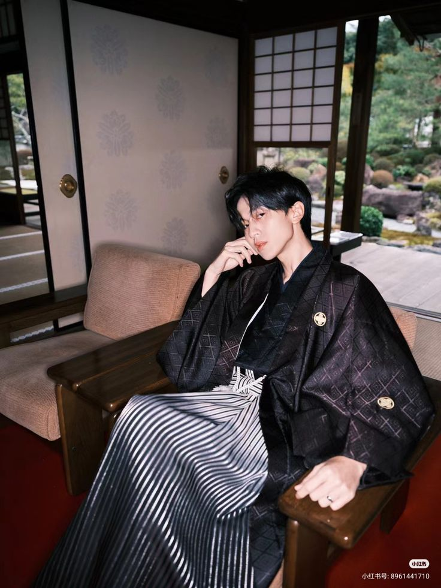
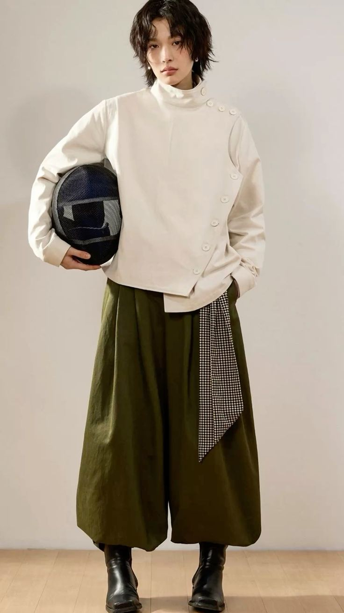
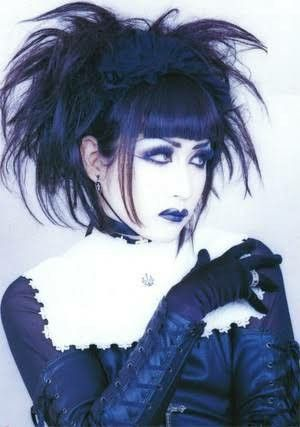
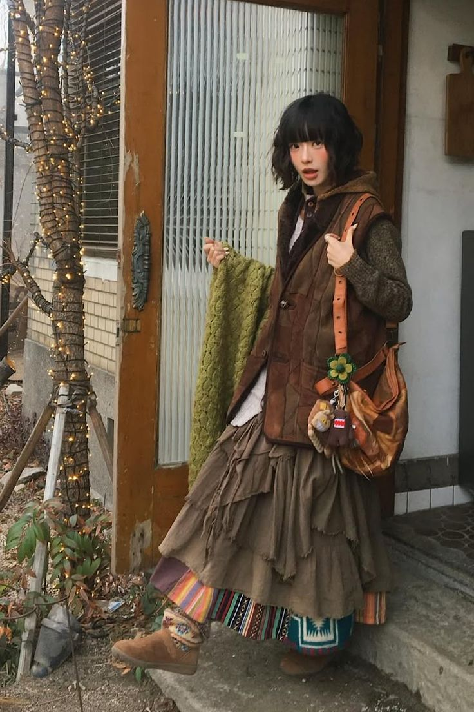
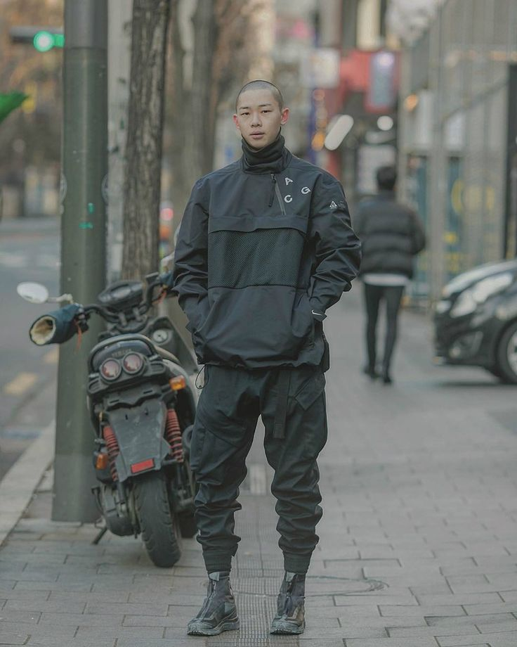
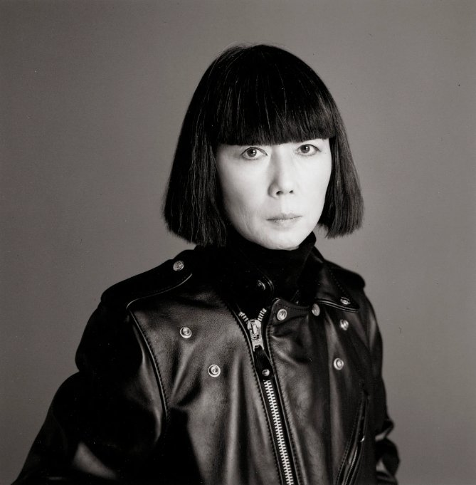

Kimono
着物
O kimono — literalmente "coisa para vestir" — é muito mais do que uma peça de vestuário. É um repositório de significados, estações, ocasiões e hierarquia social. A sua forma em T é praticamente inalterada há mais de mil anos.
Cada detalhe tem um significado: o comprimento das mangas indica o estado civil, os padrões florais reflectem as estações do ano, e as cores comunicam a idade e a ocasião. Vestir um quimono é, em si, uma arte — o processo de envolver e atar o obi (faixa) pode demorar mais de trinta minutos.

"O quimono não é uma moda — é uma filosofia de como o corpo habita o espaço." — Issey Miyake, designer japonês
Origem do Junihitoe
As nobres da corte vestiam até doze camadas de quimonos sobrepostos, com cores calculadas ao milímetro.
O Quimono Popular
O quimono torna-se acessível à classe comerciante. Surgem os primeiros padrões de yuzen — tingimento manual em seda.
Ocidentalização
O governo Meiji promove o vestuário ocidental. O quimono começa a ser reservado para ocasiões especiais.
Estilos Urbanos
Harajuku, um bairro de Tóquio, tornou-se a capital mundial dos subculturismos de moda. Nos anos 90, jovens japoneses começaram a misturar referências de forma absolutamente singular — o resultado foi uma explosão de estilos que influencia a moda global até hoje.

Wabi-Sabi Wear
Roupa que abraça a imperfeição — tecidos envelhecidos, assimetria intencional, formas desconstruídas. A filosofia budista do wabi-sabi transformada em guarda-roupa.

Visual Kei
Nascido do rock japonês dos anos 80, o Visual Kei combina maquilhagem dramática, cabelo elaborado e roupas que oscilam entre o gótico, o glam e o tradicional japonês.

Mori Girl
A "rapariga da floresta" — camadas de tecidos naturais, linho e algodão em tons terrosos, inspirados numa vida simples e próxima da natureza.

Techwear Japonês
Marcas como Acronym e as suas inspirações japonesas produzem roupas funcionais de alta tecnologia — bolsos modulares, impermeabilidade e uma estética futurista urbana.
Gyaru
A subcultura gyaru surgiu como desafio aos ideais de beleza japoneses — pele bronzeada, cabelo louro, unhas elaboradas. Uma rebeldia estilizada e feminina.
Grandes Designers
O Japão produziu alguns dos nomes mais revolucionários da moda mundial. Nos anos 80, uma geração de designers japoneses chegou a Paris e destruiu completamente os cânones ocidentais.
Rei Kawakubo (Comme des Garçons) introduziu o conceito de "moda não-moda" — roupas intencionalmente assimétricas, destruídas, incompletas. O seu desfile de 1981 em Paris foi apelidado de "Hiroshima Chic" pela crítica — inicialmente um insulto, hoje um marco histórico.
Yohji Yamamoto trabalha o preto e a sobreposição de volumes numa linguagem poética e filosófica. Para Yamamoto, a roupa é resistência.
Kenzo Takada foi o primeiro designer japonês a abrir uma boutique em Paris, em 1970. Misturou o artesanato japonês com a liberdade das cores tropicais — uma revolução alegre.
